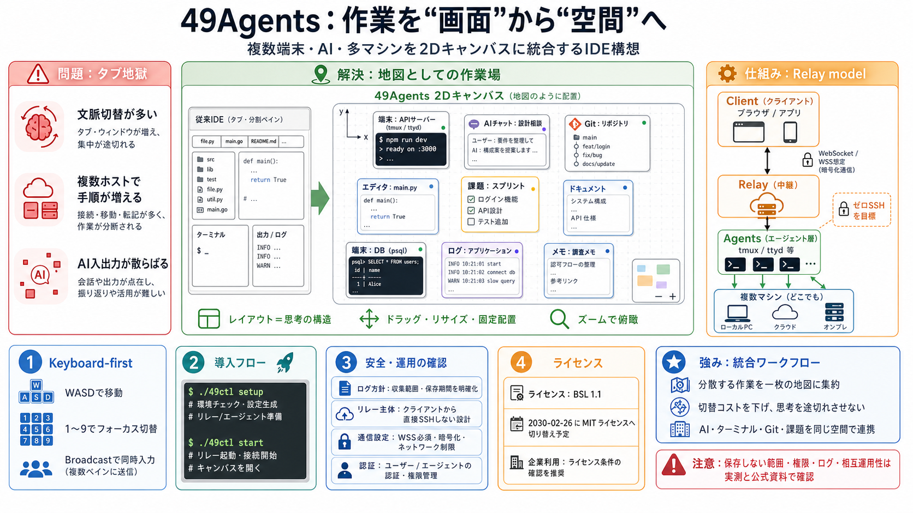

Security & Privacy — 49Agents
## Architecture Every connection uses WebSocket Secure (WSS) with TLS encryption. The cloud server is a stateless relay…

## Architecture Every connection uses WebSocket Secure (WSS) with TLS encryption. The cloud server is a stateless relay…
│ │ 49-agent │ │ Browser │ └──────────────┘ └──────────────┘ Each agent independently connects to the relay via WebSocke…
### Transcript: [...] So you can think of that game of uh you know a hundred questions you're going through like hey how…
is scanned and sandboxed, every MCP server is verified, and every AI asset is automatically inventoried, enabling develo…
### 2.2 Environment Server [...] Information Channel: During social simulations, multiple agents asynchronously and conc…